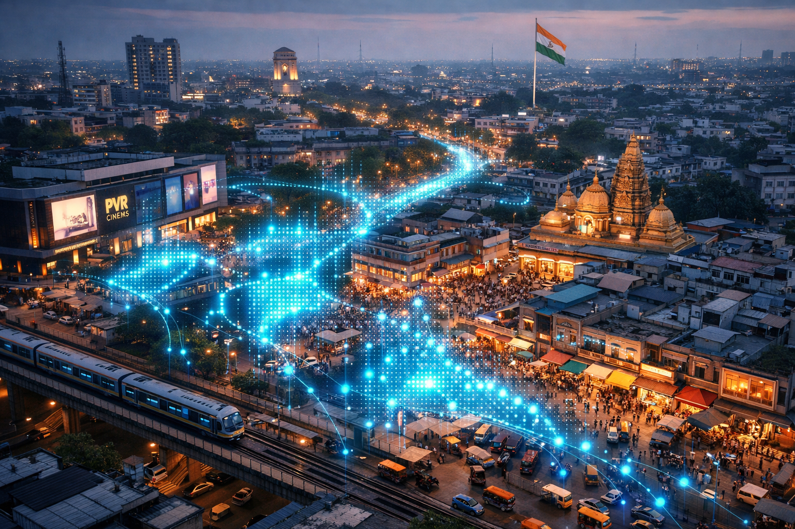

Live, anonymised heatmaps show how crowded places and routes are — before you step out.
Check Today's City PulseEvery second, millions of Jio devices anonymously signal their approximate location as they connect to cell towers. JioPulse aggregates these signals into live heatmaps that reveal where crowds are forming, which routes are congested, and how busy a market or transit hub is right now. The data is strictly anonymised and aggregated at a zone level — no individual device or subscriber is ever identified.
JioPulse layers these insights into a simple, visual map inside MyJio. Whether planning a commute, heading to a festival, or choosing when to visit a busy market, JioPulse replaces guesswork with live intelligence from the network itself.
How It Works
Three layers of technology turn anonymous connection data into actionable urban insight — without ever identifying a single subscriber.
Millions of anonymised connection events from Jio's 5G and 4G towers are aggregated every few seconds, creating a real-time picture of movement and density across the city.
Jio's AI engine processes these signals into zone-level heatmaps, overlaying density data on a familiar map interface. Crowded zones appear in warm colours; quieter areas in cool tones.
Open JioPulse in MyJio and see your city's live pulse. Zoom into a market, a station, or an event venue. Check historical patterns to plan ahead or use real-time views to make better decisions right now.
Features
JioPulse transforms the invisible rhythm of urban movement into clear, visual intelligence you can act on every day.
Real-time crowd density overlays on an interactive city map, updated every 60 seconds. Watch your city shift and pulse as people move through their day, with warm tones highlighting the busiest zones and cool blues marking quieter pockets where you can find breathing room.
See which roads and transit corridors are congested before you leave. JioPulse reveals the real-time state of your commute routes, helping you plan faster journeys and avoid bottlenecks that maps apps simply cannot detect until you are already stuck in them.
During festivals, concerts, and large gatherings, JioPulse activates enhanced resolution to show crowd flow near the venue, entry and exit density, and nearby quieter zones. Navigate the energy of a city celebration without getting caught in its chaos.
View typical crowd patterns by time of day and day of week. Know when a market is usually busy, when a station platform clears out, and when your favourite neighbourhood is at its quietest — then plan your visit for the perfect window.
Technical Specifications
Use Cases
From daily commutes to festive celebrations, JioPulse turns the network's awareness of your city into decisions that save you time and hassle.
Heading to Ganesh Chaturthi celebrations? Check JioPulse before leaving to see which routes are clear and which pandals are less crowded right now. The heatmap updates every minute, so you can time your departure for the smoothest journey and find a spot where the energy is high but the crush is manageable.
Check your usual train station or highway corridor before stepping out. If the route looks dense, leave earlier or take the alternative that JioPulse highlights in cool blue. Over time, historical patterns help you discover windows of calm that turn a stressful commute into a smoother routine.
Planning a trip to the local market? Historical patterns tell you Saturday 10am is peak — the lanes are packed, the billing queues are long, and parking is a nightmare. JioPulse suggests going after 4pm instead, when footfall typically drops and the same errands take half the time.
JioPulse is available to all Jio subscribers in major metros. Open MyJio, tap JioPulse, and see your city like never before.